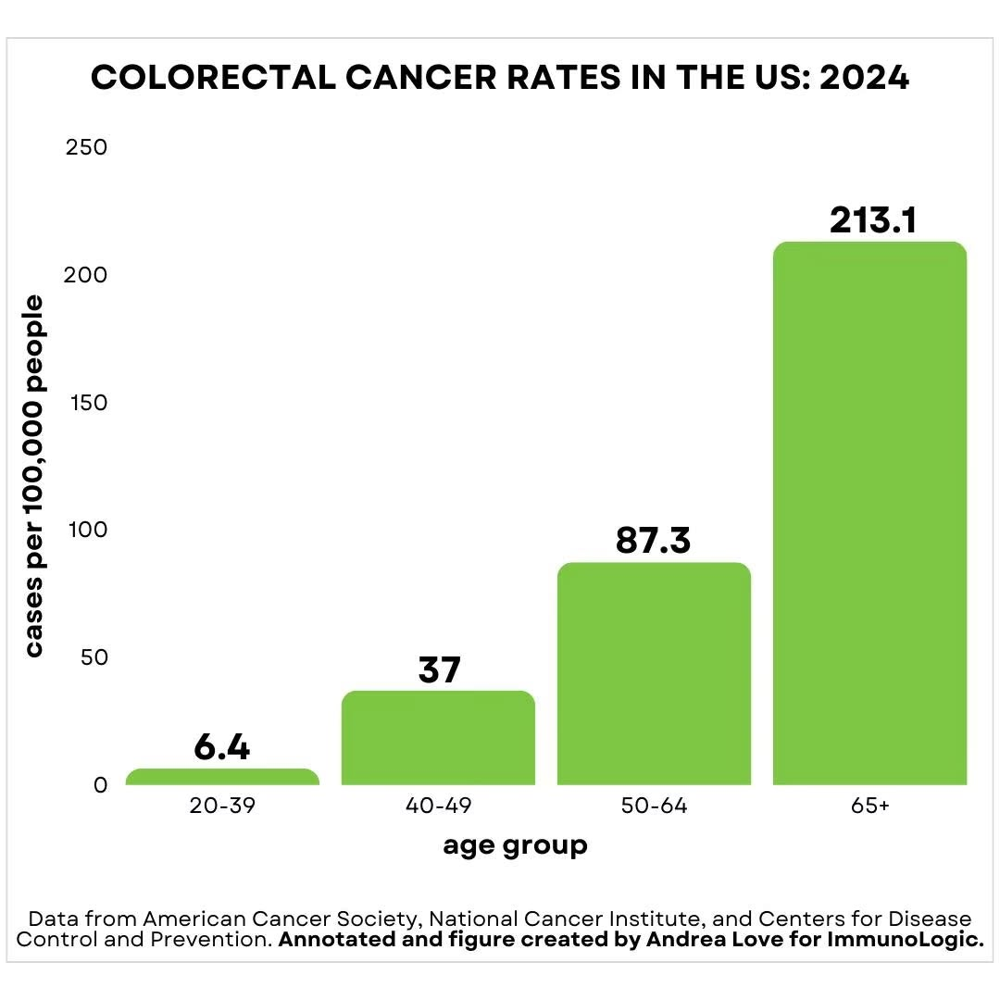

Heart disease and cancer look like very different illnesses, but they have a great deal in common. Louis Nervegna, one of the group's admins, argues that the main shared risk factor is age, because the ageing process itself drives both conditions, so measures that slow ageing and tidy up common risk factors tend to lower the risk of both1. Population data support the overlap: the same risk factors that best predict heart disease also predict cancer, particularly lung and colorectal cancer2.
A 2024 American Cancer Society study estimated that four in ten cancer cases and about half of cancer deaths in US adults aged 30 and over are attributable to modifiable risk factors3.
On whether heart drugs affect cancer: statins do not appear to cause cancer, and randomized trials show a neutral effect. Aspirin has the strongest signal, particularly in colorectal cancer. GLP-1 drugs and SGLT2 inhibitors have generated promising but mostly observational data. This article separates randomized trials, observational cohorts and animal work.
Why heart disease and cancer travel together
Shared roots: age and lifestyle
Louis points out that cancer is not one disease but many, and that the main common denominator across them is age. In his view this is why there is unlikely to be a single "cure for cancer", and why prevention through diet, exercise and lifestyle, which evidence suggests slow the rate of ageing, remains the best course8. He also rejected the claim that heart disease risk and cancer risk are a "zero-sum game": because they share ageing as a cause, optimizing heart risk factors should lower cancer risk too1.

What the cohort data show
The best-quantified link in the group's posts comes from the Atherosclerosis Risk in Communities (ARIC) study, published in Circulation in 2013. It followed 13,253 participants for 17-19 years, during which 2,880 cancers occurred. There was a graded, inverse association between the number of ideal cardiovascular health metrics (seven American Heart Association metrics measured at baseline) and cancer incidence. Participants who met 6-7 ideal metrics (just 2.7% of the cohort) had 51% lower cancer risk than those who met none. When smoking was removed from the score, the association weakened but remained: 5-6 ideal metrics were linked to 25% lower risk1. This is observational and cannot prove causation.
A JACC: CardioOncology study shared in the group likewise found that worse cardiovascular risk scores predicted greater cancer risk, with the strongest links for lung and colorectal cancer2.

A passage from the Harvard-authored book Eat, Drink, and Be Healthy, quoted by Louis, makes a similar point: eating well, keeping weight in a healthy range, exercising and not smoking can prevent 80% of heart attacks, 90% of type 2 diabetes and 70% of colorectal cancer9.
Putting "rising cancer" headlines in perspective
Posts in the group push back on alarming headlines. A shared explainer stressed that many cancer rates (breast, lung, cervical, prostate and colorectal over 50, among others) are declining, and that rising diagnoses can partly reflect changed screening guidelines8. On early-onset colorectal cancer, Louis noted that the likelihood of being diagnosed before age 50 is about 0.3%, and that rates for ages 20-39 rose from 6.4 to about 6.46 per 100,000. He says the increase should not be minimized but is small in absolute terms8. In a separate post he put the "doubling" claim in numbers: 6.4 per 100,000 aged 20-39 in 2024 versus about half that before, and argued it barely changes overall cancer rates, which have fallen over four decades10.

There is a counter-view in the group as well. A shared article reported that six obesity-related cancers (thyroid, breast, colorectal, kidney, endometrial and leukemia) are rising in people under 50 in over three-quarters of countries studied, with obesity-driven inflammation and hormonal changes as proposed drivers and a suggestion that screening alone does not explain the trend11. Obesity is associated with 13 different cancers12.
Foods and drinks: what the group links to cancer risk
Processed meat
Processed meat is the clearest dietary signal. The International Agency for Research on Cancer (part of WHO) places it in Group 1, meaning there is strong evidence it can cause cancer in humans, especially colorectal cancer. A shared post stressed that Group 1 describes the certainty of the evidence, not the size of the risk, so bacon is not as dangerous as smoking even though both are in the category13.
Louis notes that "uncured" or "natural" ham is cured with celery-juice or sea-salt nitrates that behave like sodium nitrite, so the nitrosamine concern still applies14. The shared post he was commenting on cited about 50 g a day, roughly two slices of deli ham, as being linked to a significant rise in colorectal cancer14.
A 2025 Nature Medicine burden-of-proof meta-analysis, reviewing more than 60 earlier studies, found that habitual intake of even small amounts of processed meat, sugary drinks and trans fats was linked to type 2 diabetes, ischemic heart disease and colorectal cancer. One hot dog a day corresponded to an 11% higher risk of type 2 diabetes and a 7% higher risk of colon cancer5. The Harvard Nutrition Source summary, quoted by Louis, says there is strong evidence that red meat and especially processed meat raise colon cancer risk, and suggests limiting red meat to no more than twice a week and avoiding processed meats15.
Ultra-processed food and sugary drinks
Nurses' Health Study II data published in JAMA Oncology followed more than 29,000 women from 1991 to 2015. Those eating the most ultra-processed food (about 10 servings a day) were 45% more likely than those eating the least (about 3 a day) to have a conventional adenoma, the most common precancerous polyp, before age 5016. Louis also highlighted a Nature Metabolism study in which the glucose-plus-fructose combination found in sugar-sweetened beverages promoted colorectal cancer metastasis through the enzyme SORD. He adds that large prospective cohorts have repeatedly linked sugary drinks with colon cancer, so the paper may explain a mechanism17. The mechanistic study is laboratory work, not a human trial.
Fats: butter, plant oils and the seed-oil debate
The Harvard Nutrition Source review quoted in the group says total fat as a percentage of calories shows no significant association with cancer in adults, and the Women's Health Initiative Dietary Modification Trial found a low-fat diet did not change breast or colon cancer rates. It does mention that, in Nurses' Health Study II, premenopausal women eating the most animal fat had a 40-50% higher breast cancer risk, which the review suggests may be due to other factors such as hormones in red meat and high-fat dairy15. Louis notes a later Harvard study updates this picture.
That later study is the Harvard analysis of 221,054 adults in the Nurses' Health Study, Nurses' Health Study II and the Health Professionals Follow-Up Study, followed for more than 30 years and published in JAMA Internal Medicine. Louis shared it several times and described the magnitude as surprising18192021. The reported associations were:
- Replacing 10 g a day of butter (just under a tablespoon) with plant oils: 17% lower risk of all-cause death and 17% lower risk of cancer death18.
- Each extra 10 g a day of butter: 12% higher risk of cancer death; highest versus lowest butter intake: 15% higher all-cause mortality18.
- Each extra 10 g a day of plant oil: 11% lower cancer death and 6% lower cardiovascular death; highest versus lowest plant-oil intake: 16% lower total mortality, with the biggest benefits from olive, canola and soybean oil18.
This is an observational cohort that was about 84% women and about 95% non-Hispanic white, a limitation noted in the quoted press release18. Louis's own comment was that the long-term evidence does not support treating butter as a health food21.
On the claim that seed oils cause colorectal cancer, Louis said dozens of human randomized trials show seed oils are not inflammatory, and shared an explainer noting the viral study behind the claim was a molecular screen of 40 tumour biopsies with no dietary component22.
Fibre, dairy and wine
Gokhan Can shared a long summary of the WHO-commissioned Reynolds 2019 meta-analysis (185 prospective studies and 58 trials). Intake of 25-29 g of fibre a day was linked to 15-30% lower all-cause mortality and 16-24% lower incidence of coronary heart disease, type 2 diabetes and colorectal cancer, with further benefit for each extra 8 g. A 2025 NHANES analysis suggested diminishing returns beyond about 30 g a day23.
On dairy, the 2020 NEJM review that Louis highlighted concluded that high dairy intake is likely to increase prostate cancer risk and possibly endometrial cancer, but to reduce colorectal cancer risk, with effects depending on what dairy is compared with24. An umbrella review of 54 meta-analyses shared by Gokhan linked cheese to a lower risk of ER-negative breast cancer (RR 0.89), but found no clear link to cancer mortality or prostate cancer25. A yogurt dose-response meta-analysis of 17 cohorts (896,871 participants) found lower all-cause and cardiovascular mortality but no significant association with cancer mortality26.
On alcohol, a Frontiers in Nutrition meta-analysis of 73 studies and over 4.3 million participants, shared by Louis in a post by Dr Brian Lawenda, found moderate wine intake (up to one drink a day for women, two for men) was not associated with higher overall cancer risk27. This is contested, and the post challenges the "all alcohol is the same" message rather than recommending drinking. A Harvard summary quoted in the group adds that higher folate intake appears to blunt the extra breast cancer risk seen with more than one drink a day28.
IGF-1 and ketogenic diets (more speculative)
Louis argues that high insulin and IGF-1 are linked to cancer and diabetes, that refined starch and sugar and excess animal protein raise IGF-1 most, and that people with Laron syndrome (very low IGF-1) have no documented cancer deaths, noting these claims come from videos and discussion rather than named papers29. Gokhan's "balanced look" at ketogenic diets lists possible anti-cancer effects but calls the research early-stage and presents a personal pro-keto view30.
Nutrients and supplements: helpful, neutral or cautionary
- Folate. A Harvard Nutrition Source summary says higher folate intake over 15 or more years is linked to lower colon and breast cancer in observational studies. In a trial of people with prior polyps, 1,000 mcg a day of folic acid gave no protection and increased the risk of multiple or advanced polyps, so timing and dose matter28. Louis argues that methylfolate supplements raise methylfolate levels more than folic acid or food folate, and that high levels may feed existing precancerous cells. He takes 400 mcg of folic acid a day and suggests staying near the recommended intake31.
- Magnesium. A summary of a Rhonda Patrick talk posted by Gokhan reports an association of higher magnesium intake with 24% lower pancreatic cancer risk per 100 mg32. A 240-person trial of magnesium glycinate in people with prior polyps shifted gut bacteria, a microbiome result rather than a cancer outcome33.
- Vitamin D. The same talk summary says Mendelian randomization studies suggest low vitamin D has a causal effect on cancer mortality, and suggests a blood level of 40-60 ng/mL32. In a small randomized trial of 80 women receiving chemotherapy for breast cancer, 2,000 IU a day of vitamin D3 was associated with a pathological complete response of 43% versus 24% on placebo34.
- Glutathione. Louis cautions that glutathione supplements mostly end up outside cells, and a Nature study showed some cancer cells can use extracellular glutathione as a cysteine source35.
- BPC-157 and creatine. BPC-157 has not been shown to cause cancer, nor shown safe in people with active or high-risk cancer36. A UCLA mouse study suggested creatine may boost cancer-fighting immune cells, though earlier preclinical work was mixed37.
- Blood donation. In a randomized trial of people at high risk for heart disease, blood donation did not lower heart attacks or strokes, but cancer deaths were half as frequent in donors after 6 years. Louis notes this is thought to reflect lower iron38.
Do heart drugs affect cancer?
Statins
Louis compiled meta-analyses of randomized trials showing statins are neutral for cancer4:
- A 2023 meta-analysis of 35 randomized trials: cancer incidence odds ratio 0.99 (95% CI 0.95-1.03) and cancer mortality 0.99 (0.91-1.07).
- A 2012 individual-data analysis of 27 trials and about 175,000 people: median 5 years of statin therapy had no effect on incidence of or mortality from any cancer.
- A 2017 analysis of 21 trials and 65,196 participants: relative risk 0.97 (0.92-1.02).
- A 2006 JAMA meta-analysis also found a neutral effect.
Show data
| Odds ratio or relative risk (log scale) | 95% CI | |
|---|---|---|
| Cancer incidence (2023, 35 trials) | 0.99 | 0.95–1.03 |
| Cancer mortality (2023, 35 trials) | 0.99 | 0.91–1.07 |
| Cancer risk (2017, 21 trials, 65,196 people) | 0.97 | 0.92–1.02 |
Cohort studies and registries, which can run for decades but cannot prove causation, have linked statin use to lower risks of advanced and fatal prostate cancer4. A Danish registry study found that starting statins within 3 years of early-stage breast cancer diagnosis was associated with a 10% lower risk of breast cancer death and 8% lower all-cause mortality, with a number needed to treat of 59 over 10 years39. Laboratory work adds mechanistic hypotheses: statins blocked an IL-33 inflammation pathway in mice, preventing chronic pancreatitis and pancreatic cancer development40. In a 2026 preclinical study, sildenafil trapped cholesterol in cancer cell lysosomes, and combining it with a statin gave stronger anti-metastatic effects than either alone41.
Low LDL and cancer: reverse causality
Louis explains that rapidly dividing tumour cells scavenge circulating LDL to build membranes, so LDL falls in people with cancer. That is why observational studies often link low LDL to higher cancer mortality, but "the low LDL is not causing the cancer; the cancer is causing the low LDL"42. The 2026 Science Advances study he shared found that aggressive TP53-mutant breast cancers depend on cholesterol and that blocking PI5P4K enzymes trapped cholesterol and disrupted mTOR signalling in laboratory models42.
Aspirin
Aspirin has the strongest randomized evidence among heart drugs:
- Lynch syndrome. In John Burn's trial of 861 patients, 600 mg of aspirin daily for at least two years roughly halved colorectal cancer risk over 10 years. Early results from a second trial suggest 75-100 mg is as effective, and UK guidelines changed after the first trial6.
- Colorectal cancer recurrence. In a Nordic trial run by Anna Martling's group, 160 mg of aspirin daily for three years after surgery cut recurrence by 55% in patients whose tumours had a PIK3 pathway mutation, found in about 40% of patients7. The BBC piece Louis shared notes Sweden now screens bowel cancer patients for these mutations and offers low-dose aspirin, that adverse effects were few in both trials, and that a larger trial in other cancers is under way6.
- Mechanism. A 2025 Nature mouse study found platelet-derived thromboxane A2 suppresses CD8+ T cells via ARHGEF1; aspirin or COX-1 inhibition lifted this and reduced metastases, but only in animals with intact T-cell immunity43. An NEJM commentary framed aspirin as an immune-modulating agent and stated explicitly that it was not a recommendation for aspirin use44.
The BBC article notes aspirin can cause indigestion, bleeding, ulcers and rarely brain haemorrhage, and that who should take it regularly remains debated6.
GLP-1 drugs, SGLT2 inhibitors and metformin
At the 2026 ASCO meeting, more than 40 studies examined GLP-1 drugs and cancer. Observational findings included about 30% lower breast cancer in more than 100,000 women, nearly 96% versus about 90% five-year breast cancer survival, and less progression to stage IV in 10,225 patients12. A JAMA Network Open study found a 91% lower relative hazard of all-cause death in women with breast cancer and type 2 diabetes using GLP-1 drugs versus insulin or metformin; Louis stressed it was observational, the endpoint was all-cause death, and breast-cancer-specific benefit was not shown45.
Dr Brian Lawenda, in a post Louis shared, argues SGLT2 inhibitors may reduce heart disease, cancer and dementia risk, but most research is in people with diabetes and benefits in non-diabetics are inferred from mechanisms46. By contrast, metformin has failed in large trials as a cancer treatment in prostate and breast cancer, despite early promising signals47.
Cancer treatment news the group has followed
Many posts concern treatment rather than prevention and sit outside the heart focus:
- A personalized mRNA melanoma vaccine given with Keytruda succeeded in a phase 3 trial of more than 1,100 patients, building on phase 2 five-year data showing roughly a 50% reduction in recurrence or death. It treats cancer after tumour removal rather than preventing it4849.
- Daraxonrasib, an oral RAS inhibitor, raised one-year survival in previously treated metastatic pancreatic cancer from 18.7% to 53.3% in the 500-patient RASolute 302 trial50.
- High-dose intravenous vitamin C with chemotherapy roughly doubled median survival from 8 to 16 months in a small phase 2 pancreatic cancer trial of 34 patients5152. Louis notes IV vitamin C has a long controversial history52.
- The vitamin D analog paricalcitol plus chemotherapy gave a partial response in 10 of 24 patients versus 1 of 12 on placebo in a 36-patient trial, but the study was not designed to prove efficacy5354.
What this means for you
- Treat heart and cancer prevention as one project: not smoking, healthy weight, exercise and a good diet appear in both the ARIC data and the ACS estimate13.
- Limit processed meat, including "uncured" products514.
- Be cautious with sugary drinks and ultra-processed foods1617.
- Consider replacing butter with olive or other unsaturated plant oils (observational evidence)18.
- Aim for adequate fibre; the Reynolds analysis points to roughly 25-29 g a day23.
- Stay near recommended folate doses rather than high-dose supplements, especially with a history of polyps28.
- A cancer diagnosis is not a reason to avoid statins on the evidence collected here, but any drug or supplement question in cancer care belongs with the treating team434.
- Discuss aspirin with your doctor, especially if you have Lynch syndrome or a colorectal cancer history, because benefit and bleeding risk depend on the person6.
Frequently asked questions
Do statins cause cancer?
Not according to the randomized-trial meta-analyses Louis compiled: across 35 trials, cancer incidence and mortality odds ratios were both 0.994.
Does low LDL raise cancer risk?
Probably not. Louis explains the low-LDL and cancer association as reverse causality, with tumours consuming LDL42.
Should I take aspirin to prevent cancer?
The strongest evidence is in Lynch syndrome and in colorectal cancer patients with certain tumour mutations67. Benefits for the general population are not established in the posts, and bleeding is a real risk, so it is a conversation for your doctor.
Is colorectal cancer in young people exploding?
Louis argues the absolute risk is small (about 0.3% diagnosed before 50) but still worth lowering8; others point to rising obesity-related cancers under 5011.
Do GLP-1 drugs lower cancer risk?
Early observational data hint at lower breast cancer risk and better survival, but these are associations, not proof1245.